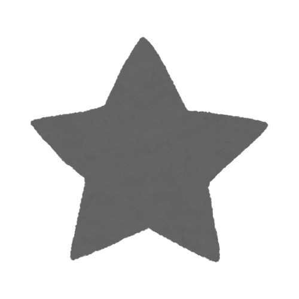

Étudiant - Développeur - 19 ans
Ewan François, étudiant à l'IUT Informatique d'Aix-En-Provence, en apprentissage constant du développement.
Je me passionne pour divers sujets, mais voici mes principaux loisirs que j'aime réaliser !
J'aime tout d'abord les jeux vidéo, pour plusieurs raisons, mais principalement, je dirais que j'aime jouer aux jeux car certains peuvent offrir une belle morale. D'autres permettent de faire grandir notre imagination ou notre réflexion.

Je suis aussi passionné par les sciences, mais principalement par l'espace ; les étoiles ainsi que les planètes ou même les phénomènes cosmiques qui se produisent, je trouve cela magnifique et ça nous fait réaliser parfois à quel point on peut être petit face à tout cela.
Je n'ai pas une très grande culture sur ce domaine, mais je m'efforce d'essayer de la grandir dès que je peux.
J'ai également commencé à apprendre la modélisation 3D avec l'utilisation du logiciel Blender car je prends particulièrement du plaisir à réaliser cette activité.
Enfin j'adore coder, cette passion rejoint un peu ma soif d'imagination car avec du code, on peut créer ou du moins théoriser ce qu'on veut.
Je réalise donc des petits projets en Python, HTML & CSS, Dart pour à la fois améliorer mon niveau en programmation mais aussi pour le plaisir de coder.
Durant ma première année de BUT Informatique, j'ai réalisé plusieurs projets, qu'ils soient au sein des cours ou même hors de ceux-ci.
Voici donc la liste de mes différents projets que j'ai pu réaliser pour le moment, certains sont toujours en cours ou en apprentissage, tout comme certains sont finis.
Tout d'abord, voici les projets que j'ai pu réaliser pendant mes cours.
Lors de ma première année, nous avons réalisé diverses SAE (Projet en groupe durant une période limitée).
Voici les principaux que j'ai réalisés :
Réalisation d'un programme en C++ suite à des attentes d'un client.
Réalisation d'un site Web optimisé et fonctionnel.
Analyses et explorations entre deux algorithmes sur des pages internet (algorithme PageRank).
Construction d'une base de données.
Développement d'une application pour un doctorant.
Installation et suivie d'un réseau.
Exploitation d'une base de données.
Gestion d'un projet.
Tous ces projets ont été réalisés en groupe et chacun nécessitait une bonne organisation ainsi qu'un bon travail en équipe.
Toujours lors de ma première année, voici les petits projets que j'ai pu réaliser ou que j'ai pu commencer :
Projets finis
Création d'un site web pour une photographe.
Réalisation de petits projets en Python (Rock-Paper-Scissor, calculatrice, jeu de dés).
Projets en cours
Réalisation de modèles 3D avec le logiciel Blender.
Création d'une application avec Dart.
Je suis également en train d'apprendre comment créer une IA capable de réagir aux messages qu'on lui envoie avec une personnalité complètement personnalisable et avec une voix.
Le projet est actuellement en pause mais j'essaye d'en apprendre un peu plus.
Enfin, aimant l'astronomie, je suis en train de créer un simulateur réaliste du système solaire en Python avec la bibliothèque Pygame et Astropy.
Ma petite réussite
Proche de la fin de ma première année en BUT, nous avions un projet à réaliser où l'on devait créer une démo d'un jeu (soit une Game Jam).
Notre démo, "Aix-In-Mud", a remporté la première place de cette GameJam !
Si vous souhaitez me contacter, je suis disponible la plupart du temps et j'essaierai de vous répondre le plus vite et tôt possible.
Cependant, il y a certaines règles que j'aimerais préciser.
1- Soyez respectueux pendant l'écriture de votre message.
2- Soyez concis et clair dans votre message.
3- Vous pouvez me poser n'importe quelle question, mais évitez quand même les questions qui n'ont aucun sens.
Vous pouvez également me contacter via mes réseaux sociaux.
Mon discord : rolgndar
Mon Instagram : rolgndar0